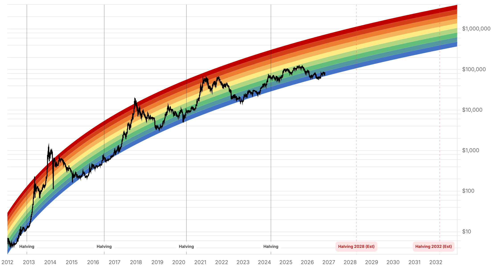

Reporte financiero
BTC cotiza en USD 79.787,49 en vivo (07:24 UTC), -1,82% intradía y -3,3% en 7 días, tras la decisión de la Fed de ayer 28 de octubre: mantuvo la tasa en el rango 3,75%-4% con una votación dividida 10-2 (las gobernadoras Lisa Cook y Beth Hammack disintieron a favor de una subida de 25pb). Lo nuevo desde el reporte de ayer: el mercado lee la decisión como un 'hawkish hold' -el presidente Kevin Warsh reconoció que 'no se ha logrado la estabilidad de precios' aunque dijo que 'estamos trabajando en ello', y evitó dar guía hacia adelante ('no creo en la guía hacia adelante, salvo circunstancias excepcionales o una crisis'). El foco cambió de inmediato hacia la reunión del 9 de diciembre: CME FedWatch pasó a asignarle a una subida de 25pb una probabilidad de 78,4% (Cointelegraph) a 86-90% según otras fuentes (Yahoo Finance, Bloomberg vía Analytics Insight) -un giro notable frente al relato de meses previos, donde el mercado todavía discutía recortes. Iggy Ioppe (CIO de Theo) resumió el impacto en BTC: 'el mercado ya tenía el mantenimiento de tasa descontado, pero no el tono hawkish', señalando que Bitcoin ahora compite con una tasa libre de riesgo cercana al 4%. En buena noticia, el problema de datos poco confiables en los flujos de ETF que se venía reportando desde el 23 de octubre parece resuelto: los días 26, 27 y 28 de octubre registraron tres jornadas consecutivas de entradas netas, con SoSoValue y Farside ahora coincidiendo en la cifra del 28 de octubre (USD 137,33M, liderada por IBIT con USD 136,01M). Nuevo catalizador de hoy: Strategy reporta resultados del Q3 2026 a las 17:00 ET, con una ganancia contable ya preanunciada de USD 20.910M por la revaluación de sus BTC y una votación de accionistas el 28 de octubre sobre dividendos diarios de su acción preferente STRC -señal de que la compañía está reasignando capital hacia recompras de preferentes en lugar de nuevas compras de BTC. Sin novedades en la apelación del fallo del Reino Unido sobre los 61.000 BTC, en la Clarity Act, ni en el plazo vencido de Blumenthal a Cantor Fitzgerald. El Fear & Greed Index se mantiene sin cambios en 51 (Neutral).
La decisión, anunciada ayer 28 de octubre a las 14:00 ET, mantuvo el rango de 3,75%-4% tal como esperaba el mercado (CME FedWatch marcaba 90,6% de probabilidad de mantener la noche anterior), pero con una votación dividida 10-2: las gobernadoras Lisa Cook y Beth Hammack disintieron a favor de una subida de 25 puntos básicos. En la conferencia de prensa, el presidente Kevin Warsh reconoció que 'no se ha logrado la estabilidad de precios' aunque agregó 'pero estamos trabajando en ello', calificó las medidas actuales como que 'están empezando a funcionar algo, pero sin conclusiones firmes', evitó comprometerse con una guía hacia adelante ('no creo en la guía hacia adelante, salvo circunstancias excepcionales, salvo una crisis') y afirmó que 'la política no tuvo ningún rol en la decisión'. El comunicado oficial de la Fed señaló que 'la acumulación de más información ayudará al Comité a determinar la postura de política'. El mercado leyó el conjunto -mantenimiento más dos disidencias hawkish- como un 'hawkish hold', no como alivio para activos de riesgo.
Con la decisión de octubre ya resuelta, la atención pasa a la reunión del 9 de diciembre. CME FedWatch le asigna ahora 78,4% de probabilidad a una subida de 25pb en esa fecha (Cointelegraph, 29 oct) y 67,3% de probabilidad de al menos una subida hacia marzo 2027. Otras fuentes citan cifras aún más altas para diciembre: 86% (Yahoo Finance) y ~90% según datos de bonos del Tesoro citados por Bloomberg (vía Analytics Insight). Aunque las cifras exactas varían por fuente y metodología, todas convergen en la misma dirección: el mercado pasó de discutir recortes hace unos meses a priced-in de una probable subida en diciembre -un cambio de régimen relevante para cualquier lectura de mediano plazo sobre BTC, que ahora compite con una tasa libre de riesgo cercana al 4% y en ascenso.
BTC cotiza en USD 79.787,49 en vivo (07:24 UTC), -1,82% intradía y -3,3% en los últimos 7 días (CoinGecko), tras haber retrocedido brevemente por debajo de USD 80.000 luego del tono de Warsh. Iggy Ioppe, CIO de la plataforma de tokenización Theo, lo resumió a Cointelegraph: 'el mercado ya tenía el mantenimiento de tasa descontado, pero no el tono hawkish' -y señaló que Bitcoin ahora compite con una tasa libre de riesgo cercana al 4%. Lewis Huang, analista de Bitget, matizó que con poca dirección nueva desde la Fed, el desempeño de corto plazo de Bitcoin podría depender más de los rendimientos del Tesoro, el dólar y el sentimiento de riesgo general que de la decisión en sí. CryptoQuant añade contexto de fondo: BTC cae 4,2% en octubre, la demanda spot viene negativa a diario desde el 14 de octubre, y el margen de ganancia promedio de los holders cayó de 33% a 8% -con un costo base promedio de los tenedores de ETF cerca de USD 81.500, por encima del precio actual.
A diferencia de los reportes de los últimos nueve días, donde las cifras de flujos de ETF de BTC venían disputadas o sin publicar entre distintas fuentes, los datos del 26, 27 y 28 de octubre muestran tres jornadas consecutivas de entradas netas, con SoSoValue y Farside coincidiendo en la cifra del 28 de octubre: USD 137,33M de entrada neta (tercer día consecutivo), liderada por IBIT de BlackRock (USD 136,01M) y BITB de Bitwise (USD 1,32M), sobre un volumen total de USD 1.260M. Las entradas netas acumuladas llegan a USD 57.610M, con activos netos totales de USD 104.880M (6,41% de la capitalización de mercado de BTC). No se encontró ninguna disputa de cifras para estos tres días, a diferencia de lo reportado para el 20, 23, 24 y 25 de octubre en ediciones anteriores.
Strategy presenta sus resultados del tercer trimestre hoy 29 de octubre a las 17:00 ET, con una sesión de preguntas y respuestas en vivo con tres analistas especializados en Bitcoin (de Citi, Barclays y BTIG). La compañía ya había estimado el 5 de octubre una ganancia contable de USD 20.910M por la revaluación a valor de mercado de sus tenencias de BTC durante el trimestre -bajo contabilidad a valor justo, por lo que el resultado reportado dependerá en gran medida de dónde cerró el precio de BTC en el trimestre. Las estimaciones de EPS de los analistas varían enormemente entre fuentes (de -USD 0,99 a USD 52,82), reflejando esa sensibilidad. Dato relevante de cara al reporte: los accionistas votaron ayer 28 de octubre sobre dividendos diarios para su acción preferente STRC, lo que confirma un giro de la compañía hacia recompras de acciones preferentes en lugar de nuevas compras de BTC con el capital disponible -un cambio de estrategia de asignación de capital a vigilar en el reporte de mañana.
No se encontraron novedades en la apelación de Fieldfisher al fallo de la High Court británica sobre los 61.000 BTC (resolución esperada en 2027), en la Clarity Act, ni respuesta pública de Cantor Fitzgerald o Tether al plazo vencido el 23 de octubre que les dio el senador Blumenthal -la búsqueda de hoy no encontró cobertura adicional sobre ninguno de estos tres puntos desde el reporte de ayer.
El índice no se movió respecto a ayer, permaneciendo en 51 dentro de la clasificación 'Neutral' -sin reflejar todavía, al momento de esta consulta, el retroceso del precio tras el tono hawkish de la Fed.
| Periodo | Valor |
|---|---|
| 23 oct | 81074.19 |
| 24 oct | 80790.84 |
| 25 oct | 80024.01 |
| 26 oct | 80006.66 |
| 27 oct | 80805.08 |
| 28 oct | 81267.59 |
| 29 oct (en vivo) | 79787.49 |
| Periodo | Valor |
|---|---|
| Fear & Greed | 51 |

“El mercado ya tenía el mantenimiento de tasa descontado, pero no el tono hawkish.”
“Con poca dirección nueva desde la Fed, el desempeño de corto plazo de Bitcoin puede depender más de los rendimientos del Tesoro, el dólar y el sentimiento de riesgo que de la decisión en sí.”
El catalizador inmediato es el reporte de resultados del Q3 2026 de Strategy hoy a las 17:00 ET, con una ganancia contable ya preanunciada de USD 20.910M y una sesión de Q&A en vivo con analistas de Citi, Barclays y BTIG -un evento que puede mover el sentimiento en empresas de tesorería cripto comparables. En el frente macro, Lewis Huang (Bitget) señala que, con poca dirección nueva desde la Fed, el precio puede depender más de los rendimientos del Tesoro, el dólar y el apetito de riesgo general que de la decisión del FOMC en sí misma -con el nivel de USD 80.000 como referencia técnica clave a vigilar en ambas direcciones.
El giro más relevante de las últimas 24 horas es que el mercado pasó a asignar una probabilidad alta (78,4%-90% según la fuente) a una subida de tasa en la reunión del 9 de diciembre, revirtiendo el relato de recortes que predominaba meses atrás. Iggy Ioppe (Theo) enmarca el impacto directo en BTC: el activo ahora compite con una tasa libre de riesgo cercana al 4% y potencialmente en ascenso. CryptoQuant aporta una lectura on-chain consistente con esa presión: demanda spot negativa a diario desde el 14 de octubre y margen de ganancia promedio de los tenedores cayendo de 33% a 8%. En contraste, el frente de flujos de ETF mejoró de forma concreta: tres días consecutivos de entradas netas (26-28 de octubre) con datos ahora consistentes entre SoSoValue y Farside, revirtiendo el problema de confiabilidad de los reportes anteriores.
Sin cambios en los objetivos de precio de largo plazo ya reportados en ediciones anteriores (Citigroup, Bernstein, Standard Chartered, Tom Lee, NYDIG, Armstrong) ni en la tesis de acumulación de Strategy, aunque el reporte de resultados de hoy (17:00 ET) puede traer la primera actualización formal de tenencias de BTC desde mediados de octubre, junto con más claridad sobre el giro de la compañía hacia recompras de su acción preferente STRC en lugar de nuevas compras de BTC. En el frente regulatorio/legal, sin novedades: la apelación del fallo británico sigue con resolución esperada en 2027, la Clarity Act continúa sin fecha de reintento en el Senado, y el plazo vencido de Blumenthal a Cantor Fitzgerald sigue sin respuesta pública conocida.
Con CME FedWatch asignando entre 78,4% y ~90% de probabilidad a una subida de 25pb el 9 de diciembre según la fuente, cualquier estrategia que todavía asuma un entorno de tasas a la baja para fin de año debería revisarse. Iggy Ioppe (Theo) enmarca el efecto directo: Bitcoin compite ahora con una tasa libre de riesgo cercana al 4%.
Más allá de la ganancia contable ya preanunciada (USD 20.910M), la señal a seguir es el giro de capital hacia recompras de la acción preferente STRC en lugar de nuevas compras de BTC -un cambio de estrategia de asignación de capital que puede repetirse en otras empresas de tesorería cripto si se confirma.
Tras nueve días de datos disputados o sin publicar, las cifras del 26-28 de octubre (tres días consecutivos de entradas, con SoSoValue y Farside coincidiendo) restauran la confiabilidad de este indicador. Volver a tratarlo como señal de demanda institucional en vez de descartarlo por las inconsistencias recientes.